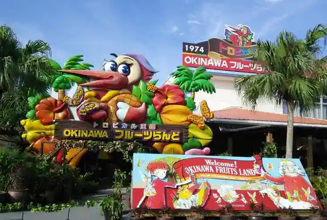
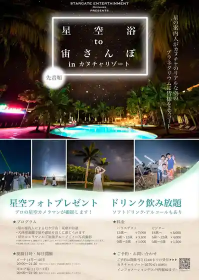

21 Seiki no Mori Beach
Nago, Okinawa · 0980-43-7415 · Official / source link
Laboratorio Dal mare Darumare
Nago, Okinawa · 0980-52-8027 · Official / source link
OKINAWA Furutsu Rando
Nago, Okinawa · 0980-52-1568 · Official / source link

STARGATE ENTERTAINMENT
Nago, Okinawa · Official / source link

Yui Maru Herb Garden
Nago, Okinawa · 080-3266-5064(080-2028-5747) · Official / source link
blanche
Nago, Okinawa · 0980-43-8757 · Official / source link
churasan
Nago, Okinawa · 070-9180-1499 · Official / source link
select shop NAGO
Nago, Okinawa · 070-9166-5057 · Official / source link
Anatamo Apartment Kutsu Shokunin ! Honkaku Kako Bo De Fasutosuteppushuzu Sakusei Experience
Nago, Okinawa · 0980-43-5556(0980435556) · Official / source link
Okinawa Bee Happy
Nago, Okinawa · Official / source link
Kanehide Kise Kantorii Club
Nago, Okinawa · 0980-53-6100 · Official / source link
Kariyushi Beach
Nago, Okinawa · 0980-52-4093 · Official / source link
Jimbun Gakko
Nago, Okinawa · 090-5473-8203 · Official / source link
Ainesu Vira no Ttsue in Kanuchabei Guran Buruchaperu
Nago, Okinawa · 0120-144-705 · Official / source link
Ainesu Vira no Ttsue Okinawa
Nago, Okinawa · 0120-144-705 · Official / source link
Esutesaron mino - Nago Mise
Nago, Okinawa · 0980-43-0754 · Official / source link
Orionhappii Park
Nago, Okinawa · 0980-54-4103 · Official / source link
Kanuchagorufukosu
Nago, Okinawa · 0980-55-8888 · Official / source link
Kanucha Beach
Nago, Okinawa · Official / source link
Kanucharian Resort Ofisu
Nago, Okinawa · 0980-55-8880 · Official / source link
Kowakingusupesu howlive Nago Miyazato Mise
Nago, Okinawa · 0980-43-0110(0980430110) · Official / source link
Za Terasu Club Atto Busena
Nago, Okinawa · 0980-51-1113 · Official / source link
Toraika Nago
Nago, Okinawa · 090-4345-2020 · Official / source link
Faibuoshan
Nago, Okinawa · 090-9595-2020 · Official / source link
Busena Beach
Nago, Okinawa · 0980-51-1333 · Official / source link
Marin Club Berii 21 Seiki no Mori Beach Mise
Nago, Okinawa · 0980-43-7415 · Official / source link
Mangosuiitsu Senmonten Okipota Shoppu
Nago, Okinawa · 0980-52-4588 · Official / source link
Rentarutoraiku no Kaisha Toraiku Okinawa club_152
Nago, Okinawa · 0980-53-8558 · Official / source link
Nakayama Kohii Sono
Nago, Okinawa · 080-3266-5064(080-2028-5747) · Official / source link
Nago Ei Market
Nago, Okinawa · 0980-52-0780 · Official / source link
Kise Beach
Nago, Okinawa · 0980-52-5151 · Official / source link
Yagaji Beach
Nago, Okinawa · 0980-52-8123 · Official / source link
Yukiyoshi Beach
Nago, Okinawa · 0980-54-2567 · Official / source link
O Kashi Goten Nago Mise
Nago, Okinawa · 0980-54-8515 · Official / source link
Tsukayama Shuzo Tokoro (Kuni Shitei Juyo Bunkazai)
Nago, Okinawa · 0980-52-2070 · Official / source link
Tsukayama Shuzo Bunka Tagengo Kaisetsu Seibi Jigyo
Nago, Okinawa · Official / source link
Haneji no Eki
Nago, Okinawa · 0980-58-2358 · Official / source link
Kako Bo Kasuterrii no
Nago, Okinawa · 0980-43-5556 · Official / source link
Kako Bo Kasuterrii no Experience Kata Kako Bo De Honkaku Kodomo Kutsu Tsukuri Ressun !
Nago, Okinawa · 0980-43-5556 · Official / source link
Kako Bo Kasuterrii no no Kankojoho
Nago, Okinawa · 0980-43-5556 · Official / source link